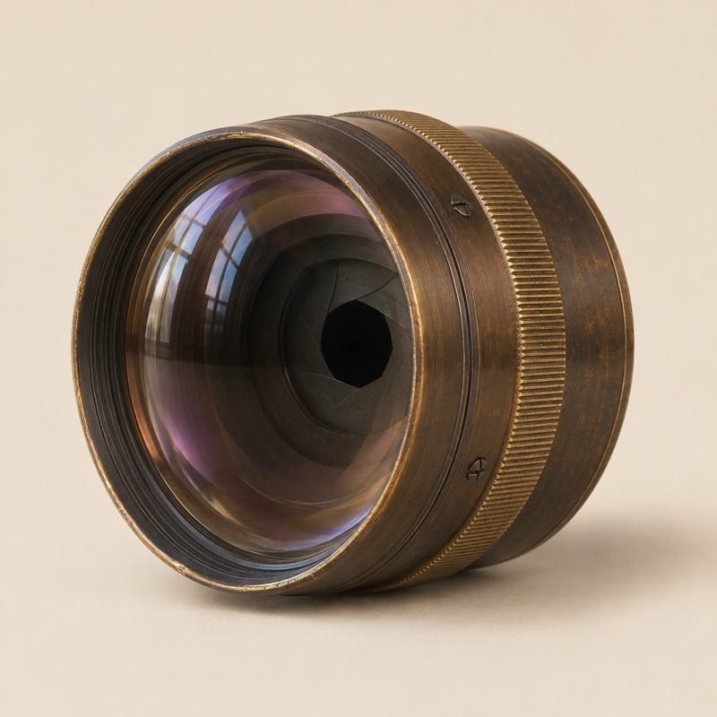

iPhone · iOS 18+
Escolha como a luz aparece na foto.
O Pelmio é uma câmera e um editor de fotos para iPhone com inspiração na fotografia analógica. Antes de salvar uma cópia, compare o halo de luz ao redor de uma janela, a granulação nas sombras e os detalhes nas bordas do quadro.
